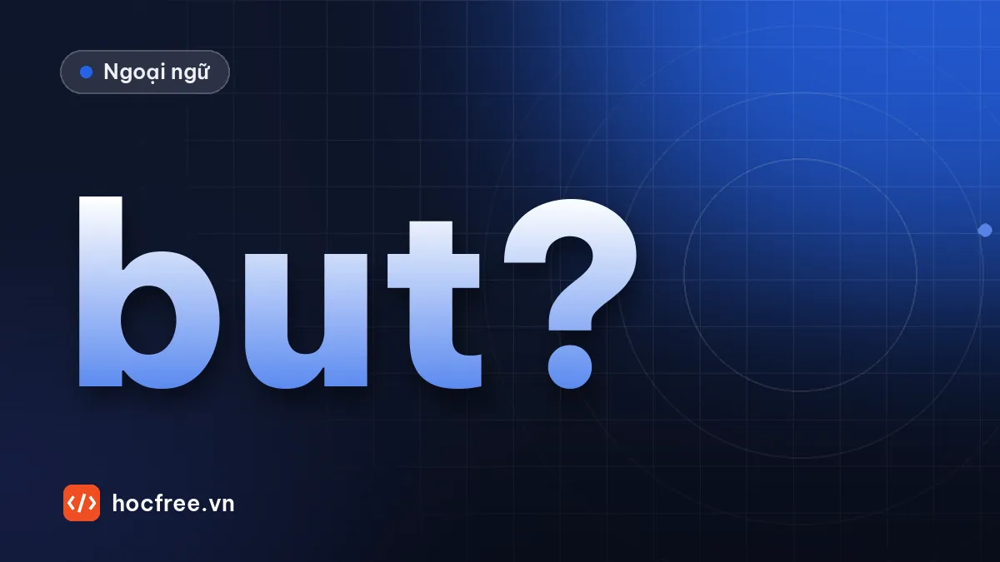

Liên từ, giới từ, trạng từ liên kết: nhóm câu khó của Part 5
Quy tắc nhìn sau ô trống là mệnh đề hay cụm danh từ để chọn although hay despite, because hay because of, however hay but, kèm 15 câu luyện.

Học xong bài này, bạn sẽ
- Phân biệt liên từ, giới từ, trạng từ liên kết theo cái đứng sau
- Chọn đúng nghĩa: although, despite, because of, however
- Dùng cặp liên từ both… and, either… or, not only… but also
Nên học trước: Mệnh đề quan hệ
Nội dung bài viết
Đây là nhóm câu mà người học 500–650 điểm sai nhiều nhất trong Part 5–6. Đề cho bốn từ có nghĩa gần nhau như although, despite, however, but, và người học chọn theo nghĩa nên dễ rơi vào bẫy. Cách giải đúng có hai bước: nhìn cái đứng sau ô trống để chọn loại từ, rồi mới chọn nghĩa.
Ba loại từ nối
| Loại | Đứng trước | Ví dụ |
|---|---|---|
| Liên từ (conjunction) | Mệnh đề (S + V) | Although the price is high, sales are strong. |
| Giới từ (preposition) | Danh từ, cụm danh từ, V-ing | Despite the high price, sales are strong. |
| Trạng từ liên kết (conjunctive adverb) | Đứng đầu câu mới hoặc sau dấu chấm phẩy, thường có dấu phẩy theo sau | The price is high. However, sales are strong. |
Ba câu trên cùng một nghĩa, khác nhau ở cấu trúc. Đó chính là điều Part 5 kiểm tra.
Bảng tra theo nghĩa
| Nghĩa | Liên từ + mệnh đề | Giới từ + danh từ | Trạng từ liên kết |
|---|---|---|---|
| Mặc dù / tuy nhiên | although, though, even though, while, whereas | despite, in spite of, notwithstanding | however, nevertheless, nonetheless |
| Vì | because, since, as, now that | because of, due to, owing to, on account of | – |
| Do đó | so (giữa câu) | – | therefore, thus, consequently, as a result |
| Nếu / trừ khi | if, unless, provided that, as long as, in case | in case of, in the event of, without | otherwise |
| Thời gian | when, while, before, after, until, once, as soon as, by the time | during, before, after, until, prior to, following, upon | meanwhile, afterward, then |
| Thêm vào | and | in addition to, besides, along with | in addition, moreover, furthermore, also |
| Mục đích | so that, in order that | for, in order to (+ V) | – |
| Thay vì | – | instead of, rather than | instead |
Ví dụ
______ the heavy rain, the outdoor concert was not canceled.
(A) Although (B) Despite (C) However (D) Because
Xem đáp án
Sau ô trống là cụm danh từ the heavy rain (không có động từ chia) → giới từ. Nghĩa tương phản → (B) Despite.
The new machine is expensive. ______, it will save us money in the long run.
(A) Although (B) Despite (C) However (D) Because of
Xem đáp án
Đầu câu mới, sau là dấu phẩy → trạng từ liên kết: (C) However.
Cặp liên từ
| Cặp | Nghĩa | Ví dụ |
|---|---|---|
| both A and B | cả A và B | Both the manager and the staff agreed. |
| either A or B | A hoặc B | You can pay either by card or in cash. |
| neither A nor B | không A cũng không B | Neither the e-mail nor the letter arrived. |
| not only A but (also) B | không chỉ A mà còn B | It is not only cheap but also reliable. |
| whether A or B | liệu A hay B | We don't know whether it will rain or not. |
Part 5 hay che một vế: thấy either thì tìm or, thấy neither thì tìm nor, thấy both thì tìm and.
Giới từ thời gian và nơi chốn hay hỏi
- by (hạn chót, trước hoặc đúng lúc): Submit it by Friday. — until (kéo dài đến): The store is open until 9 P.M.
- for + khoảng thời gian; during + danh từ chỉ sự kiện hoặc giai đoạn: during the meeting; within + khoảng (trong vòng): within 24 hours.
- in + tháng, năm; on + ngày, thứ; at + giờ.
- prior to = before; upon + danh từ hoặc V-ing = ngay khi: upon arrival.
- throughout (suốt): throughout the year; across (khắp): across the country.
Luyện tập 15 câu
1. ______ the project was difficult, the team finished it on time. (A) Despite (B) Although (C) However (D) Due to
2. The flight was delayed ______ a technical problem. (A) because (B) since (C) because of (D) so
3. Please keep your receipt ______ you need to return the item. (A) in case (B) in case of (C) unless (D) otherwise
4. Our sales rose sharply last quarter. ______, we plan to hire more staff. (A) Therefore (B) Because (C) Although (D) Despite
5. The report must be submitted ______ 5 P.M. on Friday. (A) until (B) by (C) during (D) within
6. ______ arrival at the hotel, guests will receive a welcome drink. (A) Upon (B) When (C) Once (D) As soon as
7. You will not be admitted ______ you show your ticket. (A) if (B) unless (C) without (D) because
8. The museum is closed to the public ______ the renovation. (A) while (B) during (C) for (D) when
9. ______ his lack of experience, Mr. Ho was hired because of his strong skills. (A) Although (B) In spite of (C) Even though (D) Nevertheless
10. The software is easy to use. ______, it is free for students. (A) In addition (B) In addition to (C) Besides of (D) Moreover to
11. The event will be held indoors ______ it rains. (A) despite (B) in the event of (C) if (D) due to
12. Participants can choose ______ the morning or the afternoon session. (A) both (B) neither (C) either (D) whether
13. We moved the meeting to Room 5 ______ more people could attend. (A) so that (B) in order to (C) because of (D) therefore
14. The offer is valid ______ the end of the month. (A) by (B) until (C) within (D) since
15. The factory's output increased, ______ its energy use decreased. (A) despite (B) while (C) during (D) because of
Xem đáp án và giải thích
- B – sau là mệnh đề (the project was), nghĩa tương phản.
- C – sau là cụm danh từ.
- A – sau là mệnh đề (you need); in case of đi với danh từ.
- A – đầu câu, dấu phẩy, nghĩa kết quả.
- B – hạn chót.
- A – sau là danh từ arrival → giới từ upon (= ngay khi). When / Once / As soon as là liên từ, cần mệnh đề.
- B – không được vào trừ khi xuất trình vé; sau là mệnh đề nên loại without.
- B – sau là danh từ chỉ giai đoạn.
- B – sau là cụm danh từ, nghĩa tương phản.
- A – đầu câu, dấu phẩy, nghĩa thêm vào.
- C – sau là mệnh đề, nghĩa điều kiện.
- C – có or → either.
- A – sau là mệnh đề, chỉ mục đích; in order to phải đi với V nguyên mẫu.
- B – có hiệu lực kéo dài đến cuối tháng.
- B – nối hai mệnh đề tương phản; while = trong khi đó.
Câu 6 là ví dụ điển hình: bốn đáp án cùng nghĩa "ngay khi", chỉ cấu trúc mới phân biệt được. Ghi vào sổ lỗi mọi câu bạn chọn theo nghĩa mà quên nhìn cấu trúc.